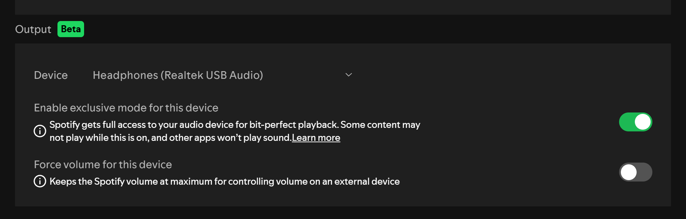

Spotify 2026
Las principales novedades en la plataforma y aquellas pendientes en ser implementadas
Comentaremos las principales novedades en Spotify y el por qué eran y son claves para el futuro de la plataforma.

A continuación, un pequeño video que nos pareció interesante mostrar hablando sobre todas las novedades y trucos que le esperan a Spotify en este año 2026
Innovaciones claves en la plataforma

Audio Bit-Perfect
Esta es una novedad reciente llegada a la versión de escritorio, la cuál permite que Spotify tome el control total de tu tarjeta de sonido, que esto en pocas palabras hace que se salte el mezclador del sistema operativo que tienen todos los computadores lo que evita la degradación de calidad en lo que estás escuchando, es decir el sonido más puro que puedas encontrar.
DJ Livi
Ya lleva un tiempo que DJ Livi está presente en la plataforma, pero recientemente le han hechos cambios importantes en su funcionamiento, cómo la capacidad de pedirle una determinada canción, artista o género musical, lo que le dio un "plus" en su funcionamiento, además de sus actualizaciones diarias hacen que su algoritmo cada vez conozca mejor a los usuarios de Spotify.
NAM Tech: Opinión de Spotify y lo que esperamos a futuro...
Y para dar cierre, nos gustaría primero decir que nos alegra que Spotify integre nuevas funciones, aunqué nos gustaría que lo hicieran de forma global y no a determinados mercado primero, pero en lo personal está bien. Aún así, esperamos que a futuro integren Dolby Atmos en su contenido como tienen otras plataformas, además un cambio en la interfaz que facilite la vista a los usuarios, pero sobretodo que escuchen los comentarios de su comunidad, que quiere lo mejor para Spotify.